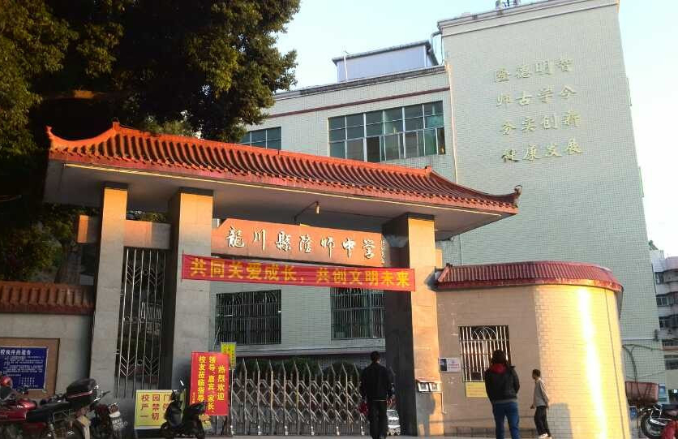

社会事业

隆师中学
教育事业
2015年底，河源市成功创建广东省教育强市，实现了教育强县（区）全覆盖、义务教育基本均衡县（区）全覆盖、教育强镇全覆盖，483所义务教育学校均通过广东省义务教育标准化学校督导评估。2019年7月底，实现“广东省推进教育现代化先进县（区）”全覆盖
。
截至2019年底，河源市共有幼儿园575所，在园幼儿11.94万人，学前教育幼儿入园率98.32%，比上年提高0.11个百分点；小学364所，在校学生31.27万人，学龄人口入学率达100%；普通中学198所，其中，初级中学110所，高级中学19所，完全中学10所；一贯制学校59所，其中，九年一贯制学校56所，十二年一贯制学校3所。初中在校学生13.77万人，初中学龄人口入学率100%，高中在校学生6.52万人，比上年增加2799人，高中阶段教育毛入学率由上年95.13%提高至95.15%；本市各类中等职业教育在校生2.12万人，技工学校在校生8000人；全市普通高等教育招生5023人，在校生13352人，分别比上年增长15.2%和4.1%
，建有市级名校长、名教师、名班主任工作室30个，培育中小学首席教师66名
。截至2019年9月，全市有高职院校1所、中职学校15所。其中，河源市卫生学校、河源理工学校、河源技师学院等3所院校成功创建国家中等职业教育发展改革示范学校，河源职业技术学院成功创建省高职高专发展改革示范学校
。
截至2020年12月，北京高校河源籍在读学生达到106人，其中本科65人，硕士34人，博士7人；包含北京大学25人，清华大学11人。在读学生专业覆盖文理医工、美术音乐；文科商管类占35%，理工科占44%，医学与艺术类各占10%多
。
文化事业
截至2019年底，河源市共有群众文化事业机构107个，其中文化馆7个、乡镇(街道)文化站100个。年末全市共有各类专业艺术表演团体7个。县级以上公共图书馆7个，馆藏量达201.38万册(件)，全年总流通303.3万人次。博物馆8个，历史文物藏品22020套、67257件；档案馆8个，馆藏量41.3万卷，增长0.73%；已开放各类档案3.9万卷，比上年增长14.50%。广播电视台6座，年末全市有线数字电视用户60.46万户，比上年增长6.05%。出版各类报纸4种，发行1797万份。2021年1月，河源市图书馆实现与各县（区）图书馆“通借通还”，设有10个“源·悦”书屋（自助图书馆）
。
河源市高新区图书馆位于高新区中央活力区，于2020年6月动工，建筑面积约1.1万平方米，造价近2亿元，拟于2021年6月交付使用 。
国家一级图书馆：河源市图书馆、和平县图书馆、源城区图书馆 。
科学技术
2019年，河源市共组织实施国家、省级各类科技计划项目2项；省级工程技术研究开发中心91个，其中本年新增4个；全年专利申请受理量达到4547件，比上年下降14.34%，其中专利申请授权量2936件，比上年增长16.05%；高新技术企业170家，本年新增29家
。
截至2020年12月，河源市人才总量45万人，其中，高职称高学历高技能人才14万，引进急需紧缺人才100多人。全市有国家级重点实验室1个，国家级科技企业孵化器3家，国家级众创空间2家，国家级“星创天地”8
家；
1人入选国家“万人计划”科技创业领军人才；7个创新创业团队、12个人才工程项目入选省“扬帆计划”；1个入选“珠江人才计划”创新创业团队；10人享受国务院特殊津贴。2020年人才工作经费超过2.5亿元
。
医疗卫生
截至2019年底，河源市共有各类卫生机构2033个(含农村卫生站及村级医疗点)，其中医院、卫生院158个，专科疾病防治机构7个，妇幼保健院7个，疾病预防控制中心6个，卫生监督检验机构6个。各类卫生机构拥有床位17255张，比上年增长8.65%；其中医院、卫生院床位14547张，增长9.57%。各类卫生技术人员19059人，增长8.22%；其中执业医师4298人，执业助理医师2295人，注册护士8426人，分别增长9.11%、11.79%和12.06%。全市已建立农村卫生站及村级医疗点1531个。全市农村清洁卫生水普及率达100%；农村自来水普及率达92.48%，农村卫生厕所普及率达99.07%。全年无偿献血23991人次，献血量758.22万毫升
。
深河人民医院项目由深圳全额帮扶建设，拟建设成为现代化三级综合医院，预计于2020年底建成 。2019年12月6日，深河人民医院主体结构正式封顶 。
2020年11月，河源市入选国家医疗保障局区域点数法总额预算和按病种分值付费试点城市名单 。
三级甲等医院：河源市人民医院。
体育事业
2019年，河源市体育健儿在参加省级以上各类重大比赛中，共获得金牌332枚、银牌446枚，其中获得全国体育比赛金牌2枚。全年共举办各类群众体育竞赛和体育活动200次，体育人口达123万人。
社会保障
2019年末河源市参加职工养老保险6.49万人，净减3.8万人；参保城镇职工基本养老离退休人员10.53万人，净增0.27万人。参加失业保险24.23万人，净减6.03万人，失业保险金标准为1269元/月。参加工伤保险30.41万人，净减2.6万人，其中，参保农民工11.97万人，净增3.97万人。参加生育保险30.66万人，净增1.98万人。年末参加职工医疗保险的人数36.18万人，净增1.29万人；参加城乡居民医疗保险的人数275.23万人，减少11.40万人；城乡居民医疗保险基金支出总额24.40亿元，受益人口达77.67万人。享受低保救济的困难群众达7.66万人，其中城镇0.59万人，农村7.07万人。共发放低保救济金3.35亿元，比上年增长11%。年末全市各类收养性社会福利单位床位17030张，增长3%，收养人数1104人，下降0.8%。全年销售社会福利彩票3.77亿元，筹集社会福利公益金3606万元，分别比上年下降12.9%和11.8%。全年完成城镇保障性安居工程住房投资额6.45亿元，比上年增长17.1%
。
通信传媒
全年邮电业务总量（邮政业2010年不变价，电信业2015年不变价，下同）170.94亿元，比上年增长61.6%。其中，邮政业务总量6.12亿元，增长
10.9%，电信业务总量164.82亿元，增长64.3%。年末电话总用户311.17万户，比上年末增长10.4%，其中，固定电话用户29.31万户，移动电话用户281.86万户。年末4G移动电话用户213.99万户，比上年末减少14.56万户。年末互联网宽带（固定）接入用户65.1万户，比上年末减少5.8万户。年末移动互联网用户224.87万户，下降5.2%。
生态环境
2019年7月5日，中华人民共和国生态环境部公布了2019年统筹强化监督（第一阶段）黑臭水体专项排查情况，河源被列入“黑臭水体消除比例低于80%的城市名单”，消除比例为50%。2019年末全市地表水质保持在各功能区标准，其中东江干流水质保持在国家地表水Ⅱ类标准，新丰江、枫树坝两大水库水质保持国家地表水Ⅰ类标准，全市饮用水源水质达标率100%；全年市区空气质量达标率97.8%，市区空气质量优良天数达到357天，没有下过酸雨。
全年完成荒山荒地造林面积83.33公顷，低产低效林改造面积6579.46公顷。年末实有封山育林面积12.98万公顷，比上年增长12.5%。活立木蓄积量6370万立方米，比上年增长5.6%。全民义务植树449.5万株。全市森林覆盖率达72.98%，比上年提高0.2个百分点；全市共有自然保护区52个，自然保护区面积26.3万公顷，占全市土地面积的16.8%。其中，建成省级自然保护区8个，自然保护区面积5.66万公顷。